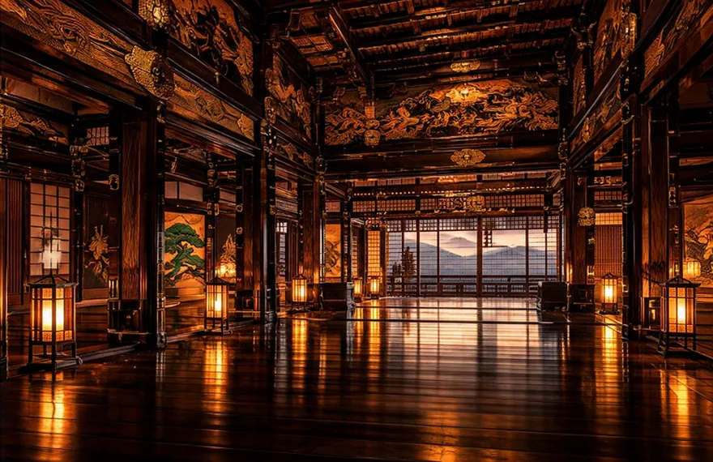
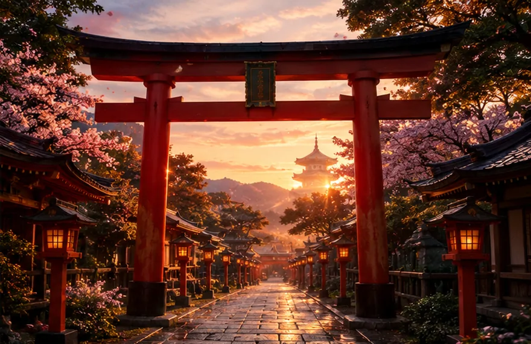
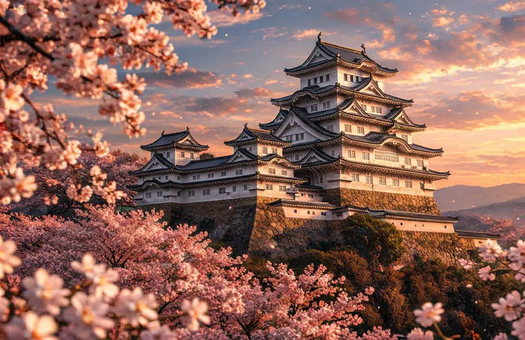
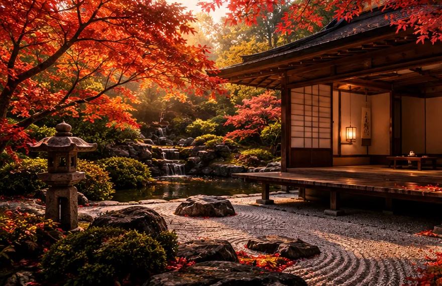

Samuraje w Popkulturze
Przeglądaj najbardziej ikoniczne gry, arcydzieła kinematografii oraz seriale inspirowane etosem i historią japońskich wojowników. Kliknij kartę, by poznać recenzję i stopień zgodności historycznej.
Ghost of Tsushima
Dzieło sztuki przedstawiające pierwszą inwazję Mongołów na wyspę Cuszima w 1274 roku. Opowieść o Jinie Sakai, który musi wybrać między kultywowaniem honoru Bushido a przeistoczeniem się w widmo dla ratowania ojczyzny.
W grze ważną rolę odgrywają krajobrazy, muzyka i styl inspirowany kinem samurajskim. Fabuła korzysta jednak z fikcyjnych bohaterów oraz współczesnej interpretacji honoru.

Shōgun
Znakomita adaptacja powieści Jamesa Clavella. Ukazuje bezwzględną grę polityczną i intrygi na dworze Lorda Toranagi (inspirowanego Tokugawą Ieyasu) tuż przed wielką bitwą pod Sekigaharą.
Serial pokazuje dyplomację i napięcia polityczne przełomu XVI i XVII wieku. Bohaterowie są fikcyjnymi odpowiednikami postaci historycznych, dlatego warto zestawiać fabułę ze źródłami.

Siedmiu Samurajów
Absolutny fundament kina historycznego. Zubożali bezpańscy samuraje (ronini) zostają wynajęci przez wieśniaków do obrony wioski przed bandytami w erze Sengoku.
Film z 1954 roku wpłynął na sposób opowiadania o grupie bohaterów w kinie na całym świecie. Choć jest fabułą, bardzo dobrze oddaje kontrast między rolnikami a bezpańskimi wojownikami.
Sekiro: Shadows Die Twice
Mroczna gra akcji osadzona w fantastycznej wersji ery Sengoku. Skupia się na mistrzowskim parowaniu ciosów kataną oraz lojalności shinobi wobec swojego młodego pana.
Fantastyczny świat gry wykorzystuje japońską architekturę, folklor i historię klanów. Nie należy go traktować jako rekonstrukcji konkretnych bitew.

Ostatni Samuraj
Hollywoodzkie widowisko inspirowane buntem w Satsumie z 1877 roku. Amerykański kapitan poznaje filozofię samurajów walczących z wymuszoną modernizacją kraju.
Film nawiązuje do reform Meiji oraz konfliktów związanych z modernizacją państwa. Losy bohaterów przedstawiono w formie hollywoodzkiej opowieści, która idealizuje część tradycji.

Niebieskooki Samuraj
Brutalna i poruszająca opowieść o zemście osadzona w epoce Edo (izolacja Sakoku). Główna bohaterka Mizu ukrywa swoją tożsamość i płeć, polując na białych kupców.
Animacja korzysta z realiów epoki Edo jako tła dla fikcyjnej historii. Łączy wyrazistą stylistykę i temat tożsamości z elementami, które nie są rekonstrukcją wydarzeń.
Jak oglądać i grać, by więcej zrozumieć?
Gry i filmy przyciągają historią, ale często łączą autentyczne fakty z fikcją. Przy każdym dziele warto sprawdzić, z której epoki czerpie inspiracje, jak przedstawia samurajów oraz które elementy fabuły zostały dopisane na potrzeby opowieści.